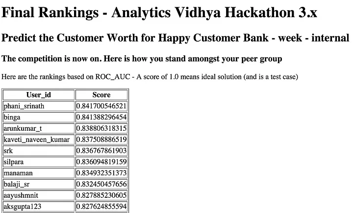
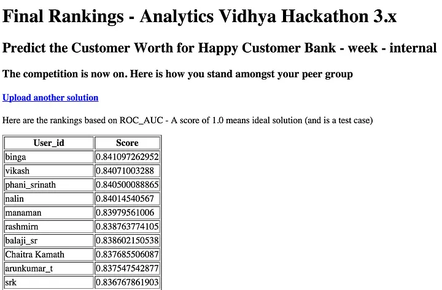

Analytics Vidhya 3.X Hackathon
Analytics Vidhya, a community of analytics professionals and data scientists hosted an online data analytics hackathon on 5th, 6th (weekend) of September, 2015. I have come to know it just a couple of days prior to the hackathon and I quickly registered and cancelled all my weekend plans. While there were a lot of registrations before the hackathon began, there were only about 70 odd participants who participated and submitted solutions.
Problem Statement: Digital arms of banks today face challenges with lead conversion, they source leads through mediums like search, display, email campaigns and via affiliate partners. Here Happy Customer Bank faces same challenge of low conversion ratio. They have given a problem to identify the customers segments having higher conversion ratio for a specific loan product so that they can specifically target these customers.
It was eerily similar to a problem statement I’ve worked with, 2 weeks earlier to this competition. I quickly jumped onto the dataset and noticed that the dataset was quite small and it was easy to run several experiments over the stipulated 2 days of time.
The evaluation metric of this competition was AUC score. So, I once went through the “rank averaging” section on this awesome ensembling guide. This article should be read multiple times by any data analyst participating in a data science competition. Also, check out my 5 minutes to understand AUC guide I posted on Kaggle forums.
As a first step, I established the pipeline — reading data, extracting a few basic features, building a simple classifier, generating the predictions file in a couple of hours and then went through the feature extraction as the time progressed. As it was a 2-day hackathon, we had to use the best tools available and snatch the lead. Once again, linear models failed to get me a good score and models like Random Forest worked well. As expected, XGBoost again did phenomenally well on the dataset.
The crucial points I noted while I worked on this dataset were: 1. When a high-cardinality categorical variable like “city” or “state” is given, try to use it. Also, merge all rare levels. Really helps! 2. XGBoost has a way to treat missing values. Sometimes it’s better to leave the missing values as-is and allow the algorithm to take a decision on how to deal with them. 3. For Random Forests, I treated the missing values as -3.14, just as some other level. 4. Use dates whenever given. You could extract day, day of week, month, quarter, year and do forward subset selection for a start!
In the beginning, I was leading on the leaderboard but soon, others like phani_srinath have taken an insane lead on the LB. I was lucky to figure out my mistake in tuning the XGB and I could improve my score. Somehow, I was unable to get my Random Forest to work well and I was out of tricks. Then came in the defining moment. I tried FTRL, an online linear model (an algorithm Google uses in its ad-prediction engine) and it worked! This came in as a shocking/pleasant surprise and I did weighted ensembling. Inspite of all this, I ended up 2nd on the private leaderboard, losing by a tiny 0.00032., though, I was happy that I lost to an incredibly tough competitor.

Phani Srinath finished 1st and I marginally missed out on the weekend contest! Fortunately, a few participants asked the organizers to extend the competition for a few more days and they obliged and extended it for 5 more days. This time I wanted to make sure I give my best shot. To demonstrate how close was the competition, the organizers revealed just the top 2 private scores before the 2nd leg of the competition and this gave me and phani_srinath an unfair lead. So, we gave out our approach to all the participants on the forum. And everybody picked it up so well that I ended up 10th on the public leaderboard in the weeklong competition. This time I built 10XGB models, 5 RF models, 5 FTRL models, averaged them for stability and made sure I ensemble my models well and made a gamble. Fortunately, it worked and Yayy! I finished highest on the private leaderboard of the weeklong competition and secured 1st position out of ~60 odd participants! I was only 50% sure about this because my CV scores were pretty strong and I used ensembling, way too much, to effectively fight variance in the dataset.
This time I finished 1st and Phani Srinath finished 3rd on the weeklong contest.

I also gave out a small guide, how to effectively cross-validate with XGBoost. See here!
I am happy that I secured 2 podium finishes and 1 win in this hackathon. This makes it 2 prizes in a month. The previous one was this. Very lucky 30 days it has been!
For other details, check out my codes on github!
Hopefully, I continue to learn more and more, and do well on future competitions. Game on!
Finally, a shout-out to the AWESOME ‘T’ trio,
- Tianqi — creator of XGBoost
- Triskelion — for his brilliant ensembling guide
- Tinrtgu — he deserves an oscar for his beautiful online-lr FTRL code!